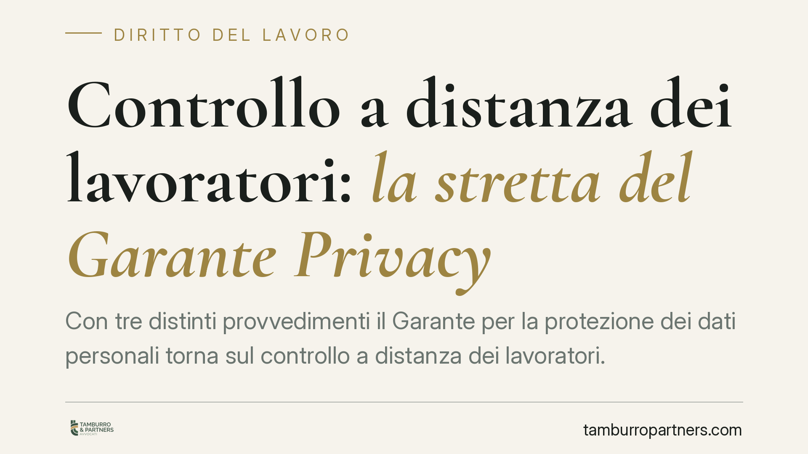

Controllo a distanza dei lavoratori: la stretta del Garante Privacy
Con tre distinti provvedimenti il Garante per la protezione dei dati personali torna sul controllo a distanza dei lavoratori. Telecamere, GPS aziendali e algoritmi di monitoraggio finiscono sotto osservazione: ribaditi i limiti dell'art. 4 dello Statuto e gli obblighi di trasparenza verso il personale. Per le imprese cresce il rischio di sanzioni; per i dipendenti si rafforzano le garanzie.

Il contesto
Il tema del controllo del lavoratore non è nuovo, ma la diffusione di strumenti sempre più pervasivi — videosorveglianza ad alta risoluzione, geolocalizzazione dei mezzi aziendali, software che analizzano in automatico produttività e comportamenti — ha spinto il Garante Privacy a intervenire con tre provvedimenti ravvicinati.
Il filo conduttore è chiaro: la tecnologia non amplia i poteri di controllo del datore di lavoro. Li inquadra, semmai, entro limiti più rigorosi.
Inquadramento normativo
La cornice resta l'art. 4 della L. 300/1970 (Statuto dei Lavoratori), riformato nel 2015. La norma vieta il controllo a distanza dell'attività lavorativa come finalità diretta. Consente però l'uso di strumenti da cui possa derivare un controllo "indiretto", purché giustificati da esigenze organizzative, produttive, di sicurezza del lavoro o di tutela del patrimonio aziendale.
L'installazione di questi strumenti richiede un accordo sindacale o, in sua assenza, l'autorizzazione dell'Ispettorato del Lavoro. Fanno eccezione gli strumenti usati dal lavoratore per rendere la prestazione (es. il pc assegnato) e quelli di registrazione degli accessi e delle presenze.
A ciò si aggiunge il Regolamento UE 2016/679 (GDPR): ogni trattamento deve rispettare i principi di liceità, minimizzazione, limitazione delle finalità e trasparenza. Il lavoratore va informato in modo adeguato, pena l'inutilizzabilità dei dati raccolti. L'art. 4, comma 3, dello Statuto subordina proprio a questa informativa l'utilizzabilità delle informazioni ai fini disciplinari.
I tre provvedimenti del Garante non introducono regole nuove: ne ribadiscono l'applicazione concreta a telecamere, GPS e algoritmi, spesso trascurata in azienda.
Le tre aree di intervento
Telecamere. La videosorveglianza deve puntare alla sicurezza e alla tutela del patrimonio, non alla verifica del rendimento. Vietato inquadrare in via continuativa le postazioni di lavoro. I tempi di conservazione delle immagini devono essere limitati e la segnaletica informativa va collocata prima del raggio di ripresa.
GPS aziendali. La geolocalizzazione dei veicoli è ammessa per logistica, sicurezza o antifurto, non per monitorare lo spostamento del dipendente in sé. Il sistema deve, dove possibile, poter essere disattivato nelle pause e fuori dall'orario di servizio.
Algoritmi di monitoraggio. È l'aspetto più delicato. Software che valutano automaticamente produttività, tempi e comportamenti rientrano a pieno titolo nei controlli da regolamentare. Scattano gli obblighi di trasparenza sulle logiche del sistema e, in presenza di decisioni automatizzate, le garanzie rafforzate dell'art. 22 GDPR.
Implicazioni pratiche
Per le aziende il messaggio è operativo: non basta aver installato uno strumento "consentito". Serve verificare che la procedura autorizzativa sia stata rispettata e che l'informativa ai lavoratori sia completa e aggiornata.
Un sistema legittimo sulla carta ma privo di accordo sindacale o di corretta informativa produce dati inutilizzabili, anche in sede disciplinare. In caso di contestazione, il licenziamento o la sanzione fondati su quei dati rischiano l'annullamento, oltre all'esposizione sanzionatoria sul fronte privacy.
Per i lavoratori aumenta la possibilità di far valere l'illegittimità di controlli opachi o eccessivi, con effetti sia sul piano disciplinare sia su quello risarcitorio.
Cosa fare in concreto
- Mappate tutti gli strumenti in uso che consentono anche un controllo indiretto: telecamere, GPS, software gestionali e di monitoraggio.
- Verificate per ciascuno l'esistenza dell'accordo sindacale o dell'autorizzazione dell'Ispettorato del Lavoro.
- Aggiornate le informative ai dipendenti, specificando finalità, modalità, tempi di conservazione e logiche degli eventuali sistemi automatizzati.
- Riducete la raccolta dati al minimo necessario e documentate la valutazione d'impatto (DPIA) dove richiesta.
- Formate i responsabili del personale sull'uso lecito dei dati raccolti, soprattutto in ambito disciplinare.
Consigliamo alle imprese una revisione periodica dell'intero assetto dei controlli, da coordinare con la funzione HR e il responsabile della protezione dei dati. L'interesse organizzativo e la tutela della riservatezza non sono in conflitto: vanno conciliati in anticipo, non in sede contenziosa.
Disclaimer
Contributo informativo a cura di Tamburro & Partners - Avv. Giuseppe Tamburro. Non costituisce parere legale.
Ogni storia di lavoro ha i suoi tempi.
Se gestisci HR e vuoi un confronto su contenzioso, ispezioni o licenziamenti, scrivi allo studio. Ti rispondiamo entro un giorno lavorativo.